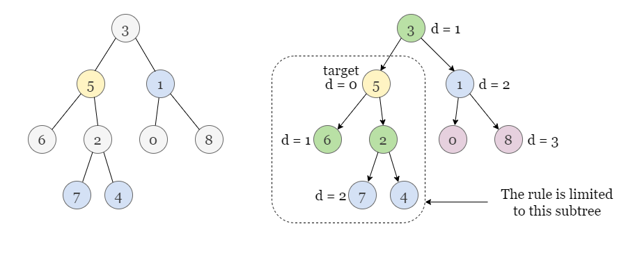
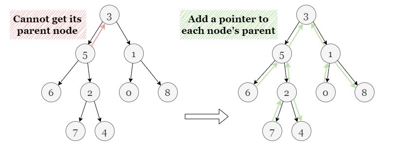
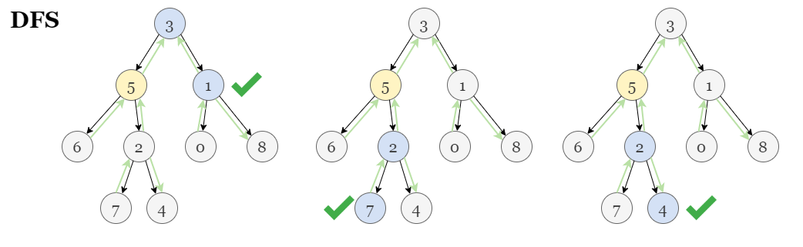
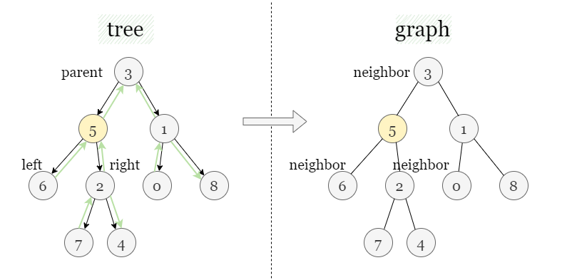
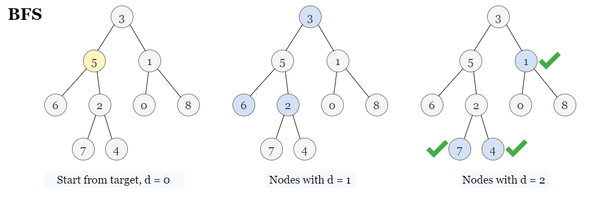

In the given tree, each node only has pointers to its left and right child nodes, making the typical tree traversal approach only applicable to the subtree rooted at the target node. We cannot access other parts of the tree beyond the subtree as we can't access the parent, which implies the need to establish additional connections beyond the child node pointers.

If you are not familiar with depth-first (DFS) search, please refer to our explore cards Depth-First Search Explore Card. We will focus on the usage in this article and not the implementation details.
In this problem, nodes in the given binary tree only have pointers to the left and right children and we can't search
in the ancestor nodes of target. We will implement a parent pointer to each node (apart from the root
node) recursively.

In Python, we can add attributes (in our case a parent pointer) to an instance of a class at any time, even if the attribute is not defined in the class. However, this can also lead to mistakes and hard-to-debug errors. Consequently, this approach does not reflect good coding practices, but we have included it for completeness.
Now, we have created an undirected graph. We define a recursive function to explore nodes as far as possible along
each branch. Upon reaching the end of the current branch, we backtrack to the next possible branch and continue
exploring. Once we encounter an unvisited node, we take one of its neighbor nodes (left child, right child, or
parent) as the next node on this branch. Recursively call the function to the next node and solve the subproblem. If
we reach the end of this branch, we backtrack to the previous node and visit the next neighbor node, and repeat the
process. If we reach a node with a distance of k to target, it denotes that this node is
one of the destination nodes. Since continuing on with this branch leads to nodes with a distance larger than k,
we will also backtrack to the previous node and try visiting the next neighbor node.

We can use a hash set to keep track of all the visited nodes. Whenever we find an unvisited neighbor node, we add it to the hash set so it won't be visited anymore.
Define a recursive function add_parent(cur, parent) to recursively add a parent pointer to node
cur: If cur is not empty, add a pointer from cur to
parent: cur.parent = parent. Then recursively call add_parent on the
left and right children of cur:
add_parent(cur.left, cur)add_parent(cur.right, cur)Call add_parent(root, None) to add all parent pointers, note that the root node does not have a
parent node.
Initialize an empty array answer and an empty hash set visited.
Define another recursive function dfs(cur, distance) to recursively find all nodes with a
distance of k to node target:
root is empty or has been visited before, return.cur to visited so it won't be revisited later.distance = k, it means cur is one of the destination nodes, add it to
answer, and return.
dfs on the children and parent of cur.Call dfs(target, 0) to find all destination nodes with a distance of k.
Return answer when the DFS is complete.
Python3
class Solution:
def distanceK(self, root: TreeNode, target: TreeNode, k: int) -> List[int]:
# Recursively add a parent pointer to each node.
def add_parent(cur, parent):
if cur:
cur.parent = parent
add_parent(cur.left, cur)
add_parent(cur.right, cur)
add_parent(root, None)
answer = []
visited = set()
def dfs(cur, distance):
if not cur or cur in visited:
return
visited.add(cur)
if distance == 0:
answer.append(cur.val)
return
dfs(cur.parent, distance - 1)
dfs(cur.left, distance - 1)
dfs(cur.right, distance - 1)
dfs(target, k)
return answer
Let nn be the number of nodes in the binary tree.
Time complexity: O(n)O(n)
add_parent and dfs recursively call themselves to process the left and
right subtrees of the current node cur. Each node is visited once by each function.
Space complexity: O(n)O(n)
visited stores a maximum of O(n)O(n) visited
nodes.
The previous approach of dynamically adding attributes is not a recommended practice. A safer method is to transform the given binary tree into an equivalent graph, where each pointer is treated as an undirected edge. Hence, the graph retains all the connected nodes from the original binary tree, including the pointers from children to parents. Consequently, we can perform a regular search in this graph, starting with depth-first search algorithm as an example.

In the equivalent graph, we only need to recursively visit all unvisited neighboring nodes of the current node, which include nodes that are equivalent to the left and right children and the parent in the original tree.
Similarly, we can use a hash set to keep track of all the visited nodes. Whenever we find an unvisited neighbor node, we add it to the hash set so it won't be visited anymore.
We will build a hash map graph. Define a recursive function build_graph(cur,
parent) to recursively build the equivalent graph: If both cur and parent
are not empty, add an edge that connects cur and parent in the hash map graph.
Then recursively call add_parent on the left and right children of cur:
cur.left is not empty, call add_parent(cur.left, cur)cur.right is not empty, call add_parent(cur.right, cur)Call add_parent(root, None) to build the equivalent graph, note that the root node does not have
a parent node.
Initialize an empty array answer and an empty hash set visited.
Define another recursive function dfs(cur, distance) to recursively find all nodes with a
distance of k to node target:
cur to visited so it won't be revisited later.distance = k, it means cur is one of the destination nodes, add it to
answer, and return.
dfs on the unvisited neighbors of cur.Add target.val to visited. Call dfs(target.val, 0) to find all
destination nodes with a distance of k to the target node.
Return answer when the DFS is complete.
Java
class Solution {
Map> graph;
List answer;
Set visited;
public List distanceK(TreeNode root, TreeNode target, int k) {
graph = new HashMap<>();
buildGraph(root, null);
answer = new ArrayList<>();
visited = new HashSet<>();
visited.add(target.val);
dfs(target.val, 0, k);
return answer;
}
// Recursively build the undirected graph from the given binary tree.
private void buildGraph(TreeNode cur, TreeNode parent) {
if (cur != null && parent != null) {
graph.computeIfAbsent(cur.val, k -> new ArrayList<>()).add(parent.val);
graph.computeIfAbsent(parent.val, k -> new ArrayList<>()).add(cur.val);
}
if (cur.left != null) {
buildGraph(cur.left, cur);
}
if (cur.right != null) {
buildGraph(cur.right, cur);
}
}
private void dfs(int cur, int distance, int k) {
if (distance == k) {
answer.add(cur);
return;
}
for (int neighbor : graph.getOrDefault(cur, new ArrayList<>())) {
if (!visited.contains(neighbor)) {
visited.add(neighbor);
dfs(neighbor, distance + 1, k);
}
}
}
}
Python3
class Solution:
def distanceK(self, root: TreeNode, target: TreeNode, k: int) -> List[int]:
graph = collections.defaultdict(list)
# Recursively build the undirected graph from the given binary tree.
def build_graph(cur, parent):
if cur and parent:
graph[cur.val].append(parent.val)
graph[parent.val].append(cur.val)
if cur.left:
build_graph(cur.left, cur)
if cur.right:
build_graph(cur.right, cur)
build_graph(root, None)
answer = []
visited = set([target.val])
def dfs(cur, distance):
if distance == k:
answer.append(cur)
return
for neighbor in graph[cur]:
if neighbor not in visited:
visited.add(neighbor)
dfs(neighbor, distance + 1)
dfs(target.val, 0)
return answer
Let nn be the number of nodes in the binary tree.
Time complexity: O(n)O(n)
build_graph recursively calls itself to process the left and right subtrees of the current
node cur. Each node is visited once.
dfs recursively calls itself to process the unvisited neighbors of the current node cur.
Each node is visited once.
Space complexity: O(n)O(n)
graph to store all edges, which requires O(n)O(n) space for
n−1n - 1
edges.
visited to record the visited nodes, which takes O(n)O(n) space.
If you are not familiar with breadth-first search, please refer to our explore cards Breadth-First Search Explore Card. We will focus on the usage in this article and not the implementation details.
Back to this problem, we start with the node target with distance = 0, then we mark all its
unvisited neighbor nodes with distance = 1 to be visited soon, once we visit a node with distance
= 1, we mark all its unvisited neighbor nodes with distance = 2 as well.
We can use a queue queue as a container to store all nodes to be visited without mixing the order. Since
the operation on the queue is done in First In, First Out (FIFO) order, it allows us to explore all nodes with the
current distance to the target node, before moving on to the nodes with larger distances.

Similarly, we use a hash set to keep track of all the visited nodes. Whenever we find an unvisited neighbor node, we add it to the hash set so it won't be visited anymore.
Define a recursive function build_graph(cur, parent) to recursively build the equivalent graph:
If both cur and parent are not empty, add an edge that connects cur
and parent in the hash map graph. Then recursively call add_parent on
the left and right children of cur:
cur.left is not empty, call add_parent(cur.left, cur)cur.right is not empty, call add_parent(cur.right, cur)Call add_parent(root, None) to build the equivalent graph, note that the root node does not have
a parent node.
Initialize an empty array answer and an empty hash set visited.
Initialize an empty queue queue to store the nodes to be visited. Enqueue the target node, in
the format of (target.value, distance = 0)
If queue has nodes, dequeue the first node (cur, distance). If
distance is equal to k, add it to answer. Otherwise, enqueue all
unvisited neighbor nodes of cur to queue in the format of (neighbor,
distance + 1), and mark them as visited, then repeat step 5.
Return answer when the BFS is complete.
Let nn be the number of nodes.
Time complexity: O(n)O(n)
build_graph recursively calls itself to process the left and right subtrees of the current
node cur. Each node is visited once.
Space complexity: O(n)O(n)
graph to store all edges, which requires O(n)O(n) space for
n−1n - 1
edges.
visited to record the visited nodes, which takes O(n)O(n) space.
queue and O(n)O(n)
space is required.